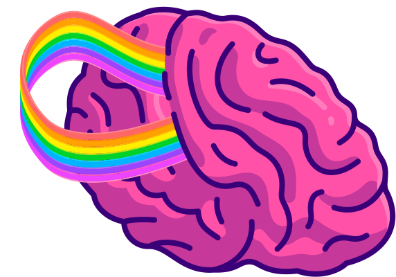

My background blends front-end development, UX design, and just enough game programming to make things dangerously interactive. I thrive at the intersection of logic and creativity — where thoughtful interfaces meet clean, performant code. The result? Interfaces that don’t just work, but feel great to use.
